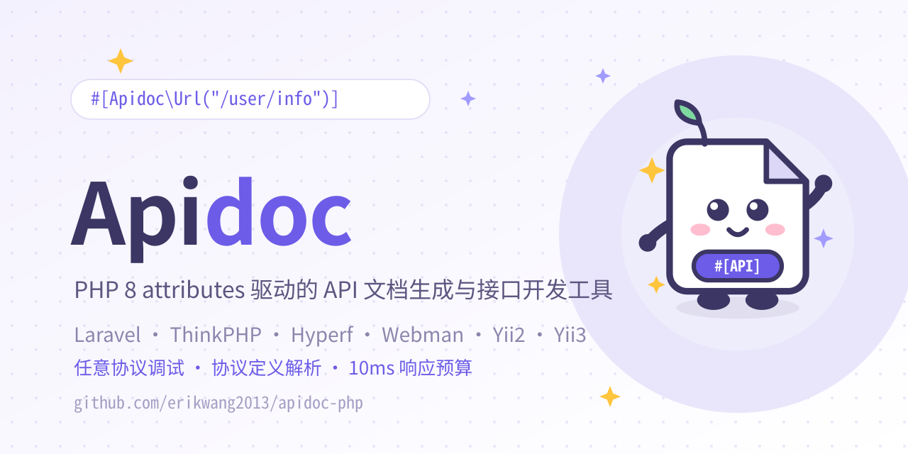
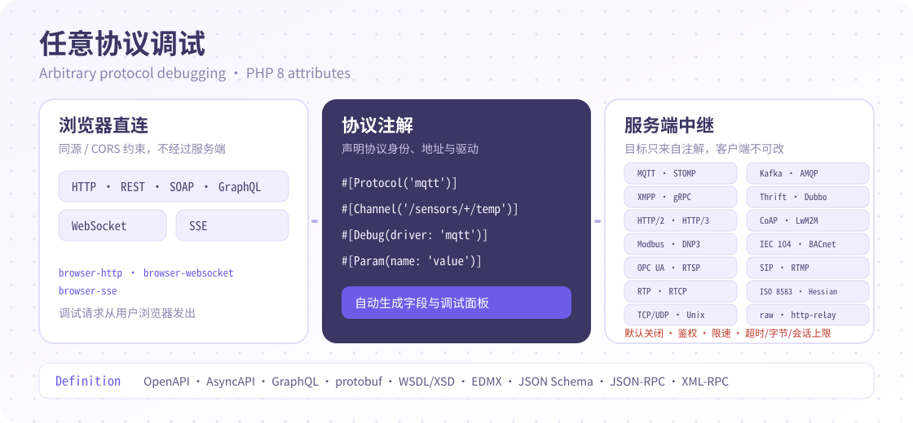

本页目录
PHP 版把接口文档写在控制器和接口方法的 PHP 8 attributes 里。安装后访问 /apidoc，即可得到可浏览、可在线调试、可导出的 API 文档。它适合已有 PHP 控制器结构、希望文档与代码一起维护的项目。

适用场景
- Laravel、ThinkPHP、Hyperf、Webman、Yii2、Yii3 等 PHP 服务端项目。
- 团队已经在控制器方法上写参数和响应，想省掉手写 Markdown 与 Postman 的时间。
- 需要在线调试、Mock、多应用/多版本、接口分享、Swagger/TypeScript 导出。
- 项目运行 PHP 8.0 或更高版本，并接受只使用 PHP 8 attributes 的写法。
本项目只解析 PHP 8 attributes，不使用 doctrine/annotations 的
@注解写法。PHP 7 项目需要先升级到 PHP 8。
环境与安装
composer require erikwang2013/apidoc-php
要求 PHP >= 8.0。安装后默认把文档挂在 /apidoc，可以通过配置键 route_prefix 修改。
最小接入
以 ThinkPHP 为例，编辑 config/apidoc.php：
return [
'apps' => [
['title' => 'Api接口', 'path' => 'app\controller', 'key' => 'api'],
],
'definitions' => "app\common\controller\Definitions",
];
在控制器中引入注解别名，并给类和方法补上声明：
<?php
namespace app\controller;
use erikwang2013\apidoc\annotation as Apidoc;
#[Apidoc\Title("用户")]
#[Apidoc\Desc("用户相关接口")]
class User
{
#[
Apidoc\Title("获取用户"),
Apidoc\Method("GET"),
Apidoc\Url("/user/info"),
Apidoc\Query(name: "id", type: "int", require: true, desc: "用户ID"),
Apidoc\Returned(name: "nickname", type: "string", desc: "昵称"),
]
public function info()
{
// ...
}
}
打开 http://你的域名/apidoc。如果没有看到接口，先检查 apps[].path 是否指向实际控制器目录，以及注解是否使用了正确的命名空间别名。
框架接入
| 框架 | 版本 | 接入方式 |
|---|---|---|
| Laravel | >= 8 | 经 extra.laravel.providers 自动注册；执行 php artisan vendor:publish --provider="erikwang2013\apidoc\providers\LaravelService" 发布配置。 |
| ThinkPHP | >= 5.1 | 经 extra.think.services 自动注册；包内 src/config.php 合并为应用配置键 apidoc。 |
| Hyperf | >= 2 | extra.hyperf.config 指向 erikwang2013\apidoc\ConfigProvider；复制配置到 config/autoload/apidoc.php。 |
| Webman | >= 1 | 安装后执行 php webman install，配置发布到 config/plugin/erikwang2013/apidoc/。 |
| Yii2 | >= 2.0 | 开启 urlManager 的 enablePrettyUrl，在入口脚本调用 Yii2Service::register()。 |
| Yii3 | >= 3.0 | 手动调用 Yii3Service::register($container, $config)，配置通过 params['apidoc'] 提供。 |
其他常用配置：
return [
'title' => 'Apidoc',
'route_prefix' => '/apidoc',
'default_author' => 'erik',
'default_method' => 'GET',
'allowCrossDomain' => false,
'cors_origins' => [],
'ignored_methods' => [],
];
解析规则
- 只解析配置
apps[].path下的控制器；每个符合规则的公开方法会成为一个接口。 - 使用
use erikwang2013\apidoc\annotation as Apidoc;后，注解写成#[Apidoc\Title(...)]。也支持逐个use短类名，但推荐别名。 NotParse可跳过整个控制器或单个方法；NotDebug关闭该控制器/接口的在线调试。Title、Desc、Group、Sort用来补充文档标题、说明、分组和排序。- 不写
Url时会根据控制器目录和auto_url配置生成；不写Method时使用default_method。 RouteParam用于{name}/{phone}这类路径参数；普通 Query 和 Body 参数分别用Query、Param。- 所有参数注解都支持
ref引用通用定义、逻辑层、模型或实体类，避免重复。
控制器与接口注解
控制器常用：
| 注解 | 说明 |
|---|---|
Title |
控制器标题 |
Group |
所属分组，值来自配置 groups |
Sort |
控制器排序 |
NotParse |
不解析该控制器 |
NotDebug |
关闭该控制器下所有接口的调试 |
接口常用：
| 注解 | 用途 |
|---|---|
Title / Desc |
接口名称与描述 |
Method / Url |
请求方法与真实 URL |
Header / Query / Param |
请求头、Query、Body 参数 |
RouteParam |
路径参数，如 /user/{id} |
Returned |
响应字段 |
Tag / Author / Sort |
标签、作者、排序 |
ParamType |
请求参数类型，json 或 formdata |
ContentType |
调试时请求的 Content-Type |
Md |
Markdown 补充说明，可用 ref 引用 md 文件 |
ResponseSuccess / ResponseError |
成功/异常响应体，main: true 指定业务数据挂载节点 |
ResponseStatus |
响应状态码列表 |
Before / After |
调试请求前/后执行的事件 |
RouteMiddleware |
自动注册路由时使用的中间件 |
一个包含 Header、Query、路由参数和响应的示例：
#[
Apidoc\Title("更新用户"),
Apidoc\Method("POST"),
Apidoc\Url("/user/{id}"),
Apidoc\Header(name: "Authorization", type: "string", require: true, desc: "Token"),
Apidoc\RouteParam(name: "id", type: "int", require: true, desc: "用户ID"),
Apidoc\Param(name: "nickname", type: "string", require: true, desc: "昵称"),
Apidoc\Param(name: "avatar", type: "file", desc: "头像文件"),
Apidoc\Returned(name: "id", type: "int", desc: "用户ID"),
Apidoc\Returned(name: "nickname", type: "string", desc: "昵称"),
]
public function update(Request $request, int $id)
{
// ...
}
请求参数
Header、Query、Param、RouteParam、Returned 共用同一套字段参数：
| 参数 | 说明 |
|---|---|
name |
字段名；用 ref 引入时可不写 |
type |
string、int、boolean、array、object、tree、file、float、date、time、datetime |
require |
是否必填 |
default |
默认值 |
desc |
字段说明 |
mock |
调试时自动生成的值 |
ref |
引用通用定义、逻辑层、模型或实体类 |
field |
ref 引入时只保留指定字段，如 id,username |
withoutField |
ref 引入时排除指定字段 |
children |
嵌套子字段 |
childrenField / childrenDesc / childrenType |
tree / array 子节点配置 |
Param 是 Body 参数；Query 是 URL 查询参数；Header 是请求头；RouteParam 是路径参数。调试请求会根据 ParamType（默认 json）组装 Body。
响应与嵌套
普通响应字段用 Returned。嵌套对象用 children：
#[
Apidoc\Method("POST"),
Apidoc\Param(name: "info", type: "object", desc: "信息", children: [
['name' => 'name', 'type' => 'string', 'desc' => '姓名'],
['name' => 'sex', 'type' => 'string', 'desc' => '性别'],
['name' => 'group', 'type' => 'object', 'desc' => '所属分组', 'children' => [
['name' => 'group_id', 'type' => 'int', 'desc' => '组id'],
['name' => 'group_name', 'type' => 'string', 'desc' => '组名'],
]],
]),
]
public function nested()
{
// ...
}
成功/失败响应可以在配置里定义全局结构，再在接口上用 ResponseSuccess / ResponseError 覆盖。main: true 标记的字段就是接口 Returned 的挂载位置：
'responses' => [
'success' => [
['name' => 'code', 'type' => 'int', 'require' => 1],
['name' => 'message', 'type' => 'string', 'require' => 1],
['name' => 'data', 'type' => 'object', 'main' => true, 'require' => 1],
],
'error' => [
['name' => 'code', 'type' => 'int', 'require' => 1],
['name' => 'message', 'type' => 'string', 'require' => 1],
],
],
复用：definitions / ref / 模型 / 实体类
在配置里指定通用注解类：
'definitions' => "app\controller\Definitions",
在 Definitions 中定义可复用参数：
class Definitions
{
#[
Apidoc\Query(name: "pageIndex", type: "int", require: true, default: 1, desc: "页码"),
Apidoc\Query(name: "pageSize", type: "int", require: true, default: 20, desc: "每页条数"),
Apidoc\Returned(name: "total", type: "int", desc: "总条数"),
]
public function pagingParam() {}
}
接口里用 ref 引用：
#[
Apidoc\Query(ref: [Definitions::class, "pagingParam"]),
Apidoc\Returned(name: "data", type: "array", ref: "dictionary", desc: "字典列表"),
]
ref 支持通用定义、逻辑层方法、模型方法和实体类，例如 ref: "pagingParam"、ref: "app\services\ApiDocService@getUserInfo"、ref: "app\model\User@getList"。用 field / withoutField 可以裁剪引入的字段。
多应用、多版本与分组
apps 的每一项是一个应用，key 唯一，path 指向该应用的控制器目录。多版本项目可以配置多个 app，或用控制器分组和 Sort 控制展示顺序：
'apps' => [
['title' => '前台 API', 'path' => 'app\api\controller', 'key' => 'api'],
['title' => '后台 API', 'path' => 'app\admin\controller', 'key' => 'admin'],
],
接口通过 Group 归入分组，Tag 添加标签，Sort 调整组内顺序。前端的应用/版本选择器会按配置树展示。
Mock 与在线调试
mock 参数用于调试时自动填充字段值：
#[
Apidoc\Query(name: "name", type: "string", mock: "@name"),
Apidoc\Query(name: "age", type: "int", mock: "@integer(1, 100)"),
Apidoc\Query(name: "phone", type: "string", mock: "@phone"),
Apidoc\Query(name: "fixed", type: "string", mock: "固定文本"),
]
在线调试面板支持全局 Header/Query/Body 参数、Mock 预填、文件上传、Before / After 事件。跨域调试需要配置 allowCrossDomain 与 cors_origins；生产环境不要把 cors_origins 留成任意来源。
任意协议与定义解析
除 HTTP 外，还可以在控制器方法上用 #[Protocol] / #[Channel] / #[Debug] 声明 MQTT、STOMP、gRPC、TCP/UDP 等协议，详情页会生成对应调试面板。

#[Protocol('mqtt')]
#[Channel('/sensors/+/temp', action: 'publish')]
#[Debug(driver: 'mqtt', target: 'tcp://broker:1883', encoding: 'json', meta: ['qos' => 1])]
#[Param(name: 'value', type: 'number', require: true)]
public function publishTemperature() {}
- HTTP/REST/SOAP/GraphQL/JSON-RPC/XML-RPC/OData/Webhooks/MCP/A2A：浏览器直连，沿用原调试面板。
- WebSocket/SSE：浏览器原生 WebSocket / EventSource；HLS 在浏览器预览，不进入服务端中继。
- 中继单次 + 流式：MQTT、STOMP。
- 中继单次：Kafka、AMQP、XMPP、gRPC、Thrift、Dubbo、Hessian、HTTP/2、HTTP/3、CoAP、Modbus TCP、ISO 8583、RTSP、SIP、DNP3、IEC 104、BACnet、OPC UA、RTP、RTCP、RTMP、LwM2M。
- 原始报文：TCP/UDP/Unix socket 走
raw；二进制 HTTP body 走http-relay；websocket-binary/socket.io使用浏览器 WebSocket 原始帧；stomp-binary走 STOMP 中继；WebRTC 面板只读并提示原因。
当前注册 27 个调试驱动：raw、http-relay、mqtt、stomp、coap、modbus-tcp、iso8583、rtsp、sip、grpc、hessian、hls、thrift、dubbo、http2、http3、amqp、kafka、xmpp、dnp3、iec104、bacnet、opcua、rtp、rtcp、rtmp、lwm2m。iec-104、opc-ua、bacnet-ip 等协议 id 会自动映射到驱动；HTTP/2、HTTP/3 执行真实请求，宿主 curl 不支持 HTTP/3 时该能力不会声明。
中继默认关闭；开启后要求 token 或 shareKey，目标只来自接口注解，并受速率、超时、字节与会话数限制。完整覆盖表与配置见 Attributes 文档。
#[Definition] 可解析本地 .proto、WSDL/XSD、GraphQL SDL、OpenAPI/AsyncAPI、JSON Schema、JSON-RPC/XML-RPC、OData EDMX 共 9 种格式，展示消息字段与校验错误；支持本地 import 与 $ref，不发起网络请求，路径限制在 protocols.allowed_roots 内，软链逃逸会被拒绝。修改定义文件后，详情缓存会按 mtime + size 指纹自动失效。
缓存命中时，文档读接口与定义解析/渲染的本机 CPU 处理目标为 P95 < 10ms（墙钟受宿主 IO/调度影响）；运行 php tests/performance.php 验证。预算不含框架启动、HTTP 服务器与外部网络。
鉴权、缓存与安全
'auth' => [
'enable' => true,
'password' => 'your-password',
'secret_key' => 'your-secret-key',
'expire' => 86400,
],
'cache' => ['enable' => true],
- 全局密码与应用/版本独立密码可以同时使用；应用密码优先于全局密码。
- 密码只在登录时比对，令牌有有效期；不要把
secret_key提交到公开仓库。 - 缓存开启后，文档解析结果会被复用；修改注解后如果页面没更新，先清理缓存。
- 安全修复版本加入了标识符白名单、路径校验、常量时间比较等边界防护。
UIC-1 统一接口
/ui/v1 统一契约已在 PHP 完整实现，同一份 apidoc-ui 可自动识别 PHP、Go、Rust：
capabilities/config/menus/detail/docMenus/docDetail/verifyAuth，调试入口debugSend/debugStart/debugPoll/debugStop。- 分享记录 CRUD、缓存清理/预热、生成器、代码模板与
exportAllData。 - 声明式生成器
/ui/v1/generator只读取ui_generator配置并在内存中渲染，不执行 middleware、不写文件、不建表；legacy/generator保留原有副作用行为。 - 原有
apiMenus、apiDetail、apiShare*等 legacy 路由保持不变，旧版 UI 继续可用。 - UIC-1 的分享动作能力为
actions:false：统一界面不执行任意 PHP callable；legacyhandleApiShareAction保留给旧接口。 exportAllData让分享页的 Swagger/全量导出不再逐接口回退。
部署时在 apidoc-ui 执行 npm run package:ui，把 dist/uic1-ui/ 放到静态服务器/CDN，并设置 BACKEND: "auto" 与 HTTP.API_PREFIX: "/apidoc"。PHP 不托管静态文件；同一产物可同时服务 Go 与 Rust。
导出、分享与代码生成
- 每个接口可生成 JSON 请求/响应示例与 TypeScript 类型定义，前端可以直接使用。
- 支持导出
swagger.json，方便导入 Swagger UI 或代码生成器。 - 接口分享可生成指定应用/接口的链接；
share.enable开启后可在文档页操作。 - 代码生成器与代码模板可以把文档字段转换为业务代码、数据表和前端 Api 文件，具体模板在
generator/code_template配置。
典型场景
列表与分页
用 definitions 定义分页 Query，再在列表接口引用：
#[
Apidoc\Title("用户列表"),
Apidoc\Method("GET"),
Apidoc\Query(ref: [Definitions::class, "pagingParam"]),
Apidoc\Returned(name: "list", type: "array", children: [
['name' => 'id', 'type' => 'int'],
['name' => 'nickname', 'type' => 'string'],
]),
]
public function list()
{
// ...
}
登录与 Token
把 Authorization 放在 Header 定义中，所有需要登录的接口复用同一个 Header 定义；调试时通过全局 Header 或 Before 事件注入 Token。
文件上传
把字段类型设为 file，并把 ParamType 设为 formdata。文档页会显示文件选择控件。
多版本接口
在 apps 中配置多个应用/版本，或按控制器目录拆分；同一份文档 UI 内切换应用和版本。
前端联调
打开接口详情的 JSON / TypeScript 视图，直接把类型复制到前端；或使用分享链接只暴露指定接口。
规则与排错
| 问题 | 检查 |
|---|---|
访问 /apidoc 404 |
检查 route_prefix、框架路由注册、Webman 插件是否安装。 |
| 接口没有出现 | 检查 apps[].path、方法是否为 public、是否被 NotParse 排除、命名空间别名是否正确。 |
| 注解不生效 | 本项目只支持 PHP 8 attributes；@注解 旧写法不会被解析。 |
| URL 不对 | 检查 auto_url、prefix 与 Apidoc\Url；路由参数用 RouteParam。 |
ref 找不到 |
确认目标方法存在、命名空间正确；类引用可写成 Class::class。 |
| 页面没更新 | 清理文档缓存；确认配置文件已发布到当前框架实际读取的位置。 |
| 调试跨域失败 | 配置 allowCrossDomain / cors_origins，只放行需要的来源。 |
| 鉴权失败 | 检查密码、secret_key、令牌有效期与应用密码优先级。 |
参考
- 完整注解表与逐节示例：docs/ATTRIBUTES.md
- 上游参考项目：HGthecode/apidoc-php / hg/apidoc
- 项目 README：apidoc-php
- 版本与下载：Releases
安装
composer require erikwang2013/apidoc-php其他语言指南
需要帮助？
到 GitHub Issues 提问，或先看仓库 README。